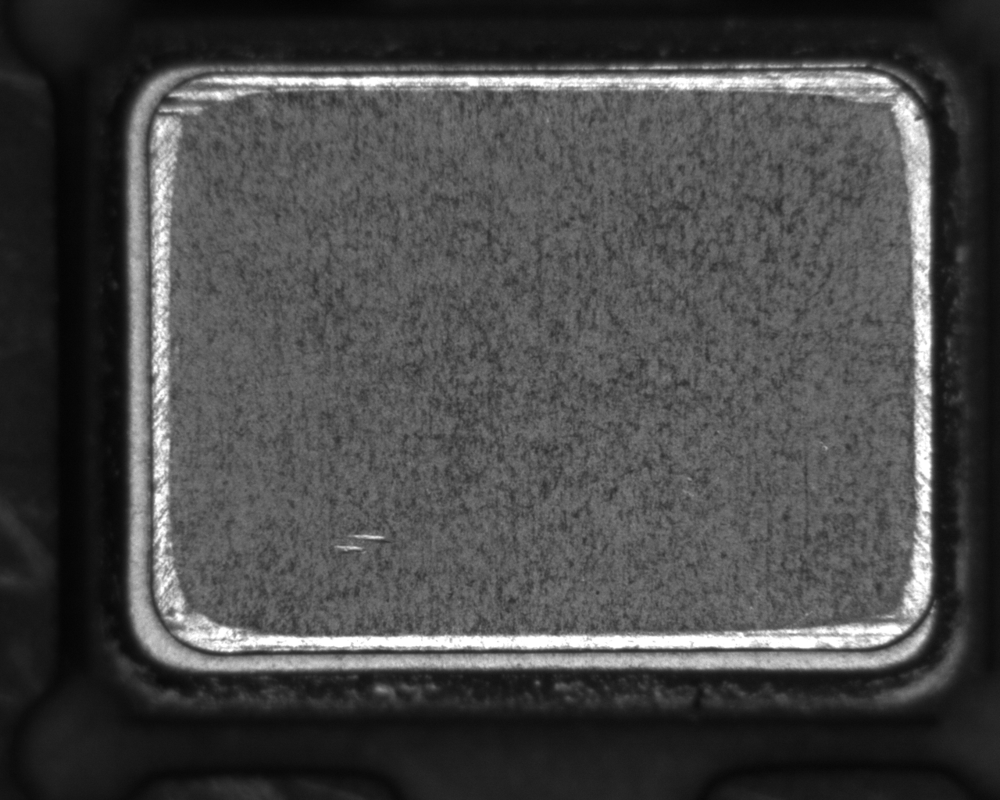

AgentCV產品概念 PRD / v0.1 / 待審核PRODUCT REQUIREMENTS DOCUMENT
以畫板表達意圖
以證據建立流程
AgentCV · Agent 驅動的視覺檢測協作平台

圖像 ＋ 標記 ＋ 關係
→ 可解釋、可驗證的檢測方案
本版目的 對齊產品核心、操作邏輯與驗收方向，避免先改軟體再發現概念錯誤。
審核狀態 v0.1 草案。會話方向共識與具體設計提案分開；尚未獲用戶批准。
文件邊界 本輪只製作 PRD，沒有修改產品或執行檢測。素材與示意不構成算法效果證明。
閱讀路線核心與資料 → 依賴流程 → 畫板交互 → 解釋契約 → 晶振故事 → 通用案例 → 驗收與待定事項
AgentCV產品概念 PRD / v0.1 / 待審核01 / 產品核心
把意圖畫出來，讓 Agent 建立可解釋的方案
工程師用圖、標記與關係表達目的；Agent 反推前提、提出方案、執行試驗；人就在結果上核對與修正。
表達自由
不要求先選齒輪、孔、寬高等固定類別；例子不能成為能力邊界。
Agent 主導
人定義目的與取捨；Agent 負責推導、調用算法、比較與補足證據。
保留未知
執行成功、證據充分、符合規格分開表示；單張成功不等於現場可靠。
本章審核點
- 未預設的需求也能由畫板提出。
- 人類標註、Agent 提議與影像實測有明確來源。
- 本文件只供概念審核；不代表軟體已具備圖中功能。
02 / 從資料開始
先知道圖像代表什麼，再談能測什麼
導入多張實例及參考資料，建立成像條件、對象介紹與已知結果；資料不足也能探索，但不能冒充正式量測。
空項目入口
中央顯示「導入圖片」「導入圖片資料夾」；導入後列表居左，可選圖、重命名、標已知判定。
成像與校準
記錄感測器像元尺寸、鏡頭倍率、分辨率、裁切／縮放，以及實測校準、畸變等資訊；標明來源與不確定性。
量綱可信
像元尺寸／倍率只提供有條件的理想換算，不能取代實際校準；無有效校準只報 px。不同配置的圖不可默認共用尺度。
本章審核點
- 新圖能追到所屬成像配置；改倍率、縮放或配置會提示尺度需重核。
- 標籤可以不完整，但未知不能偽裝 OK；標籤來源可追溯。
- 已知標籤只作驗證依據，不可偷用來生成待驗證結果。
03 / 方案怎麼出現
從結論往回追前提，合併可共用的成果
流程不是預先寫死的頁面序列。Agent 先解釋目標需要什麼證據，再反推到現有資料，缺口顯式保留。
規劃前
列出目標、必要前提、缺口與預計如何核對；人可在圖上補充或糾正。
執行中
每個產物是否足以支持下游，由下游需求判斷；定位成功不自動代表精度足夠。
路線變更
換方法、換物理特徵或縮小範圍，保留原因與受影響目標；只完成 lid 不能宣稱整個偏移任務完成。
本章審核點
- 共用定位結果，避免偏移與瑕疵節點各造一份不一致定位。
- 未知存在、確定不存在、存在但定位不可靠可分辨。
- 凹坑與暗斑的區別若無證據，標為未知並提出可區分的試驗。
04 / 節點與步驟
節點回答問題，步驟取得證據，試驗決定怎麼做
按可獨立審核的結論組織節點；不是一個函數一個節點。節點可分組、拆合，證據與結果身份不隨版面改變。
節點
有明確輸入、輸出、消費者、結論與失敗處置；存在性與定位可同組但不能混為同一結論。
步驟
有可核對的資料變換或推斷；灰階等純變換也要說明必要性，不必為簡單確定性換算造無意義試驗。
試驗
在固定目標與判據下比較候選方法／參數，保留未選原因與反例；同一原圖的兩種算法不視為獨立真值。
本章審核點
- 單步擬合誤差小，仍必須核對是否擬合正確對象。
- 哪些處理需要展開到哪個粒度，保留為待審核設計細節。
- 執行結果、品質檢查、規格判定各有狀態，不用一個 PASS 混合。
05 / 工作環境
一個工作區，按節點切換；每個節點留住現場
左側流程導覽選節點，中央畫板聚焦當前內容。完整依賴圖按需展開；對話通常收起，圖像保留主要空間。
切換節點
保留圖片、縮放、視野、選中標記、氣泡位置及草稿；返回時恢復，不重新找位置。
切換步驟
預設看節點結果；展開後看前一步／本步／後一步圖；需要才並排，保留矩形原圖比例。
圖像操作
滾輪以指標為中心縮放，放大時清晰看像素；工具用圖示並提供提示。避免靠縱向捲動找主要操作。
本章審核點
- 不在頂部重複顯示左側已有的當前階段；品牌、版本、專案操作集中左側。
- 畫板與結果不做狹窄文字卡片；詳細參數／證據按需展開。
- 大流程的折疊、搜尋與面板尺寸屬待確認提案，不能當成已獲批准的具體版式。
06 / 核心故事 A
選中對象，就地問；不必把圖搬到聊天欄
工程師選一個或多個標記，點詢問；Luna 提供問題草稿，人確認後發送，回答在相連氣泡中出現。
人做什麼
選中輪廓、線、區域、關係或任一步驟產物；點詢問，也可直接寫自己的問題。
Agent 得到什麼
相關圖像／局部像素、標記幾何與文字、關係、座標映射、來源版本、當前目標；不是只有截圖。
現場如何變化
可拖動、收合、編輯說明；回答引用的圖能再被選中詢問。Luna 不在每次拖動時打斷操作，也不自動發送。
本章審核點
- 同時選兩個標記時，Agent 明確知道問的是哪兩個及什麼關係。
- 切換節點不丟草稿；發送後保留問題與當時引用的版本。
- 詢問不默認授權改正式方案；Agent 可提議或在討論層添加內容，正式變更要可核對。
07 / 核心故事 B
距離是兩個對象的關係，不必再畫兩次
選中兩個標記，點距離圖示，就地生成尺寸控件；端點與方向直接畫出，讓人看清到底量了什麼。
快速建立
點點是直線距離，點線是垂距；線線、輪廓輪廓有多種定義時，就地選最小間隙、中心距或指定方向等。
避免偽精度
非平行線沒有單一固定間距；需指定量測位置或範圍。手繪標記幾何與真實影像量測分開標示。
持續關聯
控件引用 A、B 的版本；標記移動會更新或標記待計算。找線／找圓 ROI 移動須重算，失效時不能殘留舊結果。
本章審核點
- 自動選的距離定義必須可見、可改，不在背景猜測。
- 實際找線／找圓可顯示多個合格候選，人工選擇與排除也進入關係資料與歷史。
- Ctrl/Cmd+Z 撤銷、重做、Delete 刪除及右鍵操作需符合平台慣例；不打斷文字編輯。
08 / 每步的解釋契約
圖像證據在前，選擇結論必須跟得上試驗
規劃前說假設與比較計畫；執行中留下真實產物；執行後以觀察作決定。不得用預先寫好的理由替代事後核對。
方法依據
指出當前要辨識的物理特徵與候選假設；比較合理替代方案。簡單確定性處理可說明不比較的理由，不能機械增加灰階等空步驟。
參數依據
逐個影響決策的參數保留來源、可改值、實際生效值；比較關鍵值及交互影響，承認未試部分，不宣稱窮盡或全局最優。
邊界依據
顯示哪些像素／區段不可靠、影響哪個結論；區分同圖自洽、跨圖測試與真值誤差。97%可靠不能掩蓋關鍵邊失效。
本章審核點
- 腳本檢查真實引用、必要試驗與決策鏈；缺項返回步驟／參數／缺少證據及補全建議。
- 草稿與診斷可以保存；缺必要證據不得作為可交付節點。形式通過不代表工業可靠性通過。
- 深層可展開到算法、參數、支撐點與程式版本；工具問號含 SVG 說明，選字可問 Agent。
依據：Pi 日誌的三份唯讀審查。主要缺口包括用途解釋代替選值依據、第一組固定輸出、局部失效被總體 PASS 掩蓋，以及歷史失敗未延續。
AgentCV產品概念 PRD / v0.1 / 待審核09 / 多節點共作
引用同一份成果，變更能沿依賴傳遞
下游不複製一份無來源的輪廓。每個引用都能返回原圖、生成步驟與版本；討論圖與正式輸出保留關係。
跨圖討論
任意平台圖像都能引用到比較畫板，保留座標映射；可用真實找線／找圓、筆、掩膜及關係控件。
共創來源
Agent 的新標註與圖像可在共同畫板出現；標示作者、引用與作用，提議和已採用方案分開。
回讀驗證
工具執行成功、產物已保存、界面確實載入，是不同事實；保存產物身份與顯示回執，不能只靠 Agent 聲稱改好。
本章審核點
- 上游變更或成像配置變更後，相關下游失效狀態可追查原因。
- 用目前資料重新核對後，才恢復有效狀態。
- 寬表以可點選 sheet 引用開大面板；對話支援 Markdown 與圖像引用，不塞窄表格。
10 / 完整用戶故事
晶振：從一句問題，走到可核對的檢測方案
這是一個說明交互的故事，不指定晶振必須使用哪種算法，也不宣稱這張原圖已完成偏移或凹坑驗證。
操作主體
故事每一步都要回答：人做了什麼、Agent 收到什麼、畫板如何變化、人如何核對。
任務完整性
相對位置任務不能用單一 lid 輪廓冒充完成；凹坑判斷不能用暗斑檢出冒充。
異常分支
工件不存在、圖像模糊、候選歧義、精度不足分別處理，不混為一個 UNKNOWN。
本章審核點
- 完整故事應可由不知算法的操作人走通，再由專業人展開核對依據。
- 此處不填假測量值、不畫假缺陷、不預選最佳算法。
用戶故事 / 逐幕審核
晶振：工程師與 Agent 如何走完整個任務
用來審核交互與概念，不預定算法，也不冒充實際測試結果。
① 表達工程師指認 lid、pkg，選兩者問「是否偏移，表面是否有凹坑？」可用參考圖補充對象定義。
② 推導Agent 說明需定位兩者、建立有效表面區域；若現有成像不足以區分凹坑與污漬，先提出缺口。
③ 共作顯示多個邊界候選；人點選正確外沿。Agent 記錄排除原因、比較方法與參數，不能只追求擬合小。
④ 核對同一定位供偏移與瑕疵引用；看尺寸控件及局部不可靠段。在誤差不足以支撐判定時保留未知。
⑤ 驗證在已知 OK／不同 NG／困難樣本上批跑，查漏檢、誤判與未知；保留不參與調參的驗證圖。
⑥ 交付留下可重現流程、實際算法／環境、三項證據、資料版本、判定規則、未覆蓋邊界與回退版本。
11 / 通用性驗證
同一套表達方式，能承接不同的檢測問題
晶振是深度故事；已有十個 OpenCV 案例用來檢查平台是否又退回固定表單與固定算法。
一致交互
換樣品不必換一套產品操作：選對象、表達關係、提出問題、看證據、核對。
算法開放
傳統 CV、深度學習與自訂算法均可提議；依賴、資料、算力與許可缺口要說明，不以固定工具清單封死能力。
驗證誠實
官方範例素材未必有工業規格或完整真值；教學輸出不能充當本系統正確答案。
本章審核點
- 不得為新增案例增設一個強迫選擇的產品入口分類。
- 正式驗收須補齊每例的真值、判據、困難樣本及允許的不確定性。
跨案例 / 通用性審核
十種需求，同一套表達與核對方式
用來審核交互與概念，不預定算法，也不冒充實際測試結果。
| 故事／需求 | 人如何表達 | Agent 必須面對的問題 |
|---|
| 齒輪齒數與缺齒 | 圈對象，指出疑似缺口 | 週期性是否成立？遮擋是否被誤認缺齒？ |
| 墊圈內外徑與偏心 | 選兩個圓／輪廓與中心關係 | 非圓、透視與斷弧是否影響擬合？ |
| 多孔鈑金孔數與孔位 | 圈範圍，標出應有孔的關係 | 內部紋理是否被當孔？可見不等於貫穿。 |
| 多工件擺放方向 | 標參考方向，指出旋轉關係 | 對稱件方向是否有歧義？ |
| 黏連顆粒計數 | 指示哪裡應分成兩個 | 分離是否切碎單物體？ |
| 線路斷線與橋接 | 畫連通關係，標疑似斷點 | 線寬變化、交叉與陰影能否區分？ |
| 彩色零件分揀 | 給顏色實例與所屬類別 | 色偏／反光／成像配置變化影響？ |
| 複雜背景平面定位 | 引用模板，圈場景對象 | 匹配是否幾何一致？重複紋理誤匹配？ |
| 配準後缺印／異物 | 放參考圖與待測圖，標差異 | 差異是缺陷還是配準／光照誤差？ |
| QR 料號核對 | 圈碼區，給預期內容／規則 | 未讀出、讀錯、不符合規則分開。 |
來源：既有 OpenCV 用例收集；這些是本產品交互與算法驗證的候選故事，不是已完成驗收、也不是正式工業真值集。詳見 原始用例與來源紀錄。
AgentCV產品概念 PRD / v0.1 / 待審核12 / 驗收與後續
先審概念，再審操作故事，之後才進實作
本版狀態：概念 PRD 草案 v0.1。共識與提案分開；未經用戶審核，不把畫稿當作已批准的實作規格。
驗收底線
能從自由意圖走到依賴圖；就地詢問與距離關係成立；逐步證據可追查；版本失效能傳遞；完整目標不漏項。
優化約束
人定義漏檢、誤判、未知率、節拍與複核成本的取捨；局部改善必須重驗受影響下游，測試集與調參集區分。
交付邊界
本輪只有 PRD 文件與呈現檢查；沒有算法效果驗收、沒有產品修改、沒有部署或發布。現場接入與正式發布規則需另行定義。
本章審核點
- 晶振故事先審通，再以其他案例檢查通用性；不先鋪開修改所有案例。
- 優化歷史保留失敗假設與人類糾正，後續方案應主動核對相關前例。
- 數學模型可證明有條件性質；真實影像識別仍須實證，不能承諾任意噪聲下皆正確。
待決事項 / 審核紀錄
這些細節還沒有定案
用來審核交互與概念，不預定算法，也不冒充實際測試結果。
| 待確認 | 目前提案 | 不能先假定 |
|---|
| Luna 的身份 | 負責就地問題草稿的交互角色 | 是否獨立模型、何時調用及延遲預算尚未定 |
| 節點與步驟粒度 | 按結論與資料變換拆分，保留共用結果 | 可見步驟的預設展開深度尚未定 |
| 試驗預算 | 先驗證關鍵方法／參數與已知反例 | 不要求所有組合窮舉；停止準則待定 |
| 正式採用操作 | 討論、試驗、正式版本清楚分開 | 每次低風險試算是否需確認、發布權限待定 |
| 版面與硬體 | 畫板主體、左側流程、收合對話 | 精確尺寸、目標螢幕與鍵位尚未做操作驗收 |
本輪建議審核順序
- 先確認節點、步驟、試驗及依賴的概念。
- 再確認就地詢問、距離控件、跨節點切換的故事。
- 最後討論證據門檻、試驗預算與正式採用方式。
確認後再形成具體交互稿與實作拆分。本文件不是軟體已完成的聲明。
來源與延伸審核資料
① 本會話：產品核心、目標反推依賴、畫板原位詢問、距離控件及優化共識。
② 既有晶振原圖及 OpenCV 用例收集：原始用例與來源保留於同項目 prd 目錄。
③ 2026-10-26 Pi 審查：content-audit.json、execution-audit.json、host-audit.json。
④ 工程本體 skill：OntologyEngineering v2.0.0-rc.7。只參照目標、來源、前提、證據與版本方法；本項目沒有因此聲稱已安裝其工程執行系統。